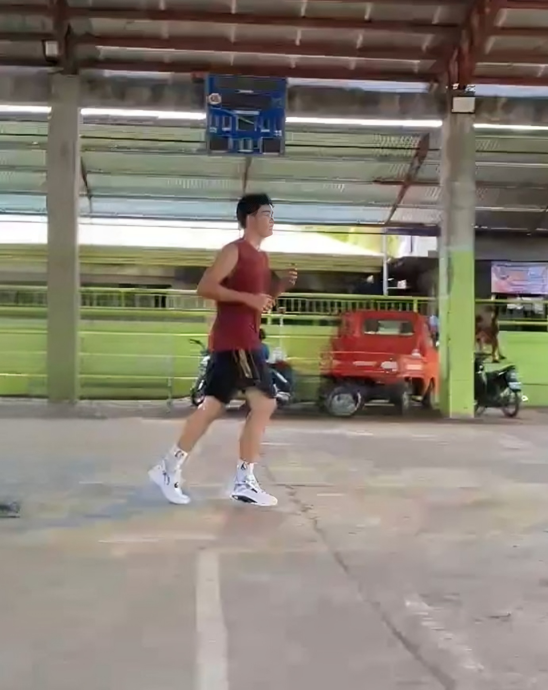

About Me
Hello! I’m Apollo B. Paderes, a First year Bachelor of Science in Information Technology student from Southern Leyte State University Bontoc Campus. I love coding, designing, and creating things that i wanna combine and control with. In my free time, I also enjoy playing basketball mostly on weekends because it helps me stay my body active. I am 18 years old and currently reside in Brgy. San Pedro, Matalom, Leyte. I was born on March 15, 2007, and I completed both my junior and senior high school education at Bato School of Fisheries.
